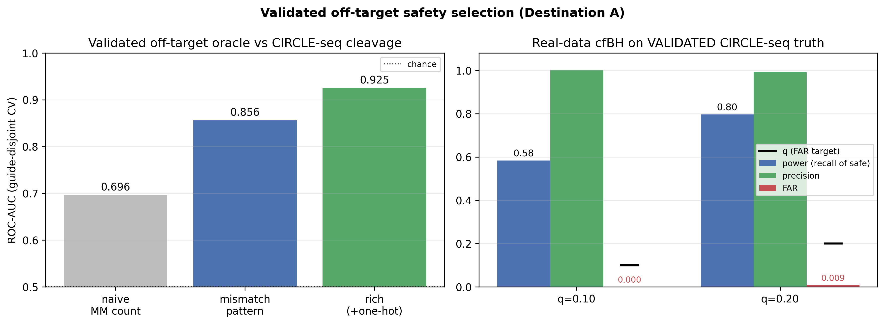
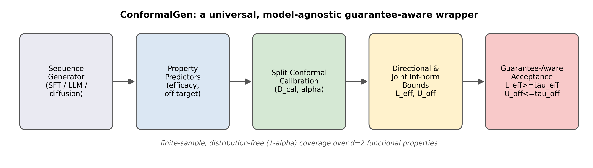
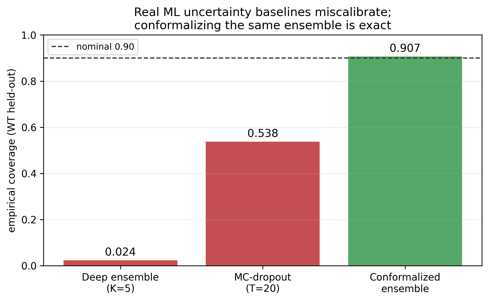
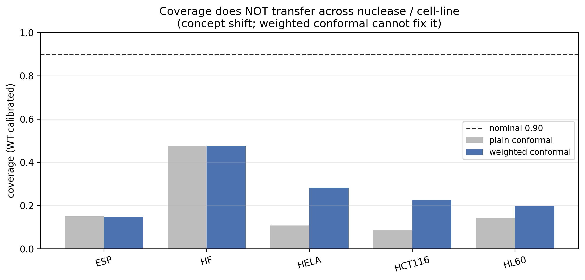

A model-agnostic conformal decision framework, validated against experimentally measured off-target cleavage. Its working core: a CIRCLE-seq-grounded oracle drives cfBH selection that provably controls the False Acceptance Rate while recovering most truly-safe guides.

Off-target oracle trained on experimentally validated CIRCLE-seq cleavage (left); cfBH selection on real validated truth (right).
Any predictor is wrapped for finite-sample, distribution-free coverage under exchangeability:
A multi-objective $\infty$-norm score covers both objectives with one quantile (no union bound).
Scalar target $T(y)=\min\{(y_{\mathrm{eff}}-\tau_{\mathrm{eff}})/s_{\mathrm{eff}},\,(\log(1{+}\tau_{\mathrm{off}})-\log(1{+}y_{\mathrm{off}}))/s_{\mathrm{off}}\}$, monotone score $V(x,t)=t-\hat T(x)$, full-calibration p-values + Benjamini–Hochberg:
Controls the False Acceptance Rate (an FDR-type criterion) at $\mathrm{FAR}\le q$ in finite samples.


Indel-efficacy is intrinsically hard: even at 55k the efficacy oracle tops out at Spearman ≤ 0.78, below the ≳ 0.9 fidelity cfBH needs. Efficacy-only and joint selection power are ≈ 0 — a property of the assay, not of conformal prediction. More data does not help.

No cohort carries both validated efficacy and validated off-target, so the multi-objective guarantee is validated per objective, never jointly. Recalibrate per nuclease/cell-line rather than assuming transfer.
git clone https://github.com/malekpouri/conformal-genomics.git cd conformal-genomics pip install -r requirements.txt ./reproduce.sh # pipeline + remediation + 38 tests
from src.selection import ConformalSelector sel = ConformalSelector(tau_eff=45., tau_off=20.)\ .fit(train_seq, train_eff, train_off) sel.calibrate(cal_seq, cal_eff, cal_off) # FAR <= q, plus power / precision / yield print(sel.evaluate(test_seq, test_eff, test_off, q=0.10))